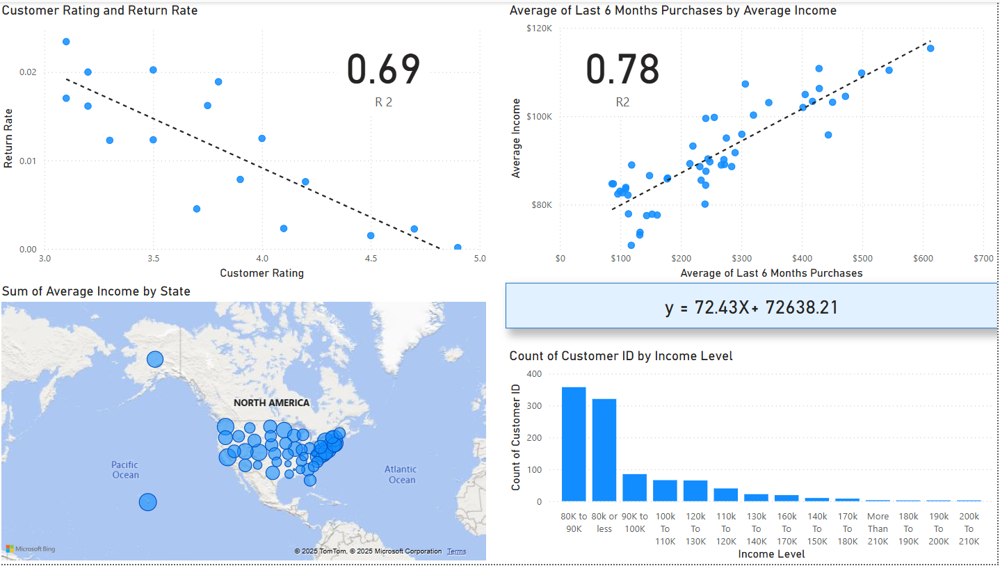

Statistical Analysis & Forecasting
Excel, Power Query & DAX | Data-Driven Business Insights
🔍 Project Overview
This project focuses on statistical analysis and forecasting using Excel, Power Query, and DAX to drive strategic decision-making through data modeling and advanced calculations.
📊 Tools & Technologies
- Excel: Data Exploration & Advanced Analysis
- Power BI: Statistical Dashboards & Reports
- Power Query: Data Transformation & Automation
- DAX: Advanced Calculations & Data Modeling
- Statistical Analysis: Sales Forecasting Techniques
📁 Project Files
Download the key project files below:
📸 Dashboard Preview
📊 Statistical Analysis Dashboard

×

📢 Key Insights
- 📊 Statistical Analysis: Applied advanced statistical techniques to identify trends and patterns.
- 🔮 Forecasting: Developed data-driven forecasts to support strategic decision-making.
- 📈 Business Insights: Provided actionable recommendations based on data analysis.
- 📈 Performance Analysis: Identified high and low-performing products and categories.
- 📉 Trend Identification: Uncovered seasonal patterns and long-term sales growth opportunities.
- 🛠️ Operational Efficiency: Streamlined data transformation processes using Power Query.
📈 Business Impact
By leveraging Excel, Power Query, and DAX, this project helped drive data-informed strategies and improve forecasting accuracy, leading to better business outcomes.